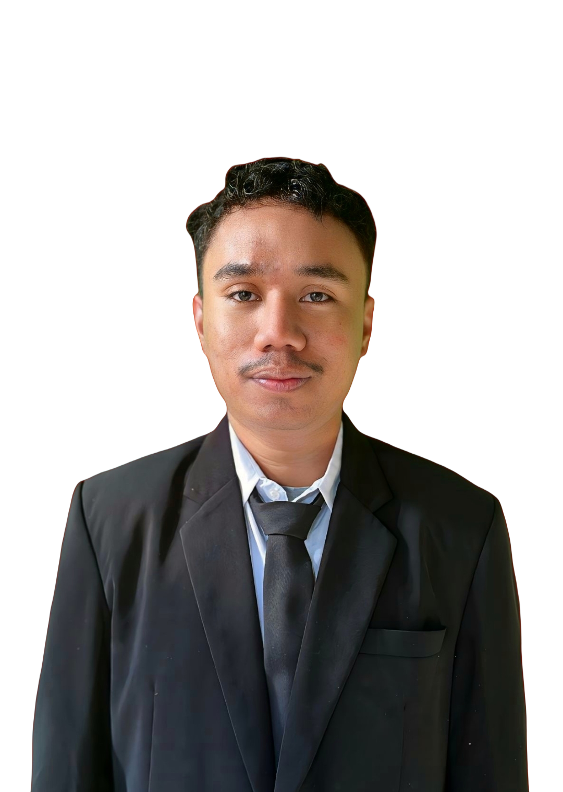

PythonStep-Up
Portal modul interaktif berpikir komputasional & Python — inovasi pembelajaran pemrograman berjenjang berbasis mobile-learning di SMAN 22 Makassar.
Gunakan tombol ← → pada keyboard, geser layar, atau klik navigasi di bawah. Klik kartu untuk membuka detailnya.

Foto Saya
Letakkan file
foto-profil.jpg di folder yang sama dengan index.html
Nama
Rahman Alex Dasilva S.Kom
NIM
25086085026
Prodi
Informatika
PPL
SMAN 22 Makassar
Program Studi PPG Informatika • Universitas Islam Makassar • Dosen Pengampu Seminar: Rizka Indahyanti, S.Pd., M.Pd.
Jelajahi
05 BagianIdentifikasi Diri
Visi pendidikan Indonesia, visi calon guru, dan 3 langkah nyata mewujudkannya.
Refleksi Mengajar
Keterkaitan materi perkuliahan PPG (Filosofi, TaRL, PSE, Deep Learning) dengan inovasi.
Karya Inovasi
Latar belakang, 5 prinsip utama, implementasi kelas, dan capaian hasil siswa.
Tindak Lanjut
Kendala evaluasi pembelajaran & rencana perbaikan lanjutan pasca-PPG.
Makna Guru
Perubahan paradigma mengajar, kesimpulan reflektif, dan saran pendidik.
Bagian 01 · Identifikasi Diri
Visi Pribadi
Visi pendidikan Indonesia dan visi pribadi sebagai calon guru Informatika.
Pendidikan yang Memanusiakan
- Sistem Inklusif & Adaptif: pendidikan berkualitas, adaptif teknologi, dan berkarakter Pancasila.
- Memanusiakan Manusia: pendidikan tidak boleh sekadar berorientasi pada nilai akademik semata.
- Pengembangan Utuh: ruang tumbuh bagi siswa untuk berpikir kritis, berkolaborasi, dan berempati.
- Pengalaman Berkeadilan: setiap murid berhak atas pembelajaran yang sesuai minat dan latar belakangnya.
Guru yang Berdampak
- Integritas & Empati: guru yang berdisiplin, empatik, serta mampu membangun hubungan positif.
- Fasilitator & Pembimbing: bukan hanya pengajar, tetapi pendamping tumbuh kembang siswa.
- Guru Reflektif: terbuka terhadap masukan, aktif mengevaluasi diri, dan belajar sepanjang hayat.
- Ruang Aman Belajar: iklim kelas yang menerima kesalahan sebagai bagian dari pencarian solusi.
Bagian 01 · Identifikasi Diri
Tiga Langkah Konkret
Mewujudkan visi pendidik adaptif. Klik kartu untuk membaliknya.
Bagian 02 · Refleksi Pengalaman Mengajar
Integrasi Teori PPG ke dalam Karya
Klik kartu untuk melihat keterkaitannya dengan inovasi.
Filosofi Pendidikan Indonesia
Kodrat alam & kodrat zamanMendasari pembuatan portal modul interaktif yang ramah smartphone agar pembelajaran Informatika relevan dengan kondisi siswa.
Pemahaman Peserta Didik (TaRL)
Scaffolding & ZPDMengarahkan alur modul berjenjang dari Berpikir Komputasional hingga Fungsi untuk mengendalikan beban kognitif siswa.
Pembelajaran Sosial Emosional
5 KSE CASEL & growth mindsetMembantu siswa mengelola frustrasi saat menghadapi error/bug pengodean lewat iklim reflektif (“The Power of Yet”).
Pembelajaran Mendalam & Asesmen
3 pilar & asesmen formatifMenerapkan pilar Memahami, Mengaplikasi, dan Merefleksi serta asesmen formatif instan lewat Zep Quiz & Form Refleksi.
Bagian 03 · Karya Inovasi
Akar Masalah Pembelajaran Python
Kelas XII.7 SMAN 22 Makassar. Klik setiap gejala untuk melihat akar penyebab dan solusinya.
Siswa kesulitan menjelaskan alur kode & cepat pasif/bosan saat praktik.
Akar penyebab: pembelajaran langsung diberi proyek kasus kompleks tanpa urutan materi dasar (variabel, operator, percabangan).
Solusi: 7 modul berurutan dengan alur modifikasi kode bertahap (Use-Modify-Create).
Siswa sekadar menyalin (copy-paste) kode yang didemonstrasikan guru.
Akar penyebab: beban kognitif melompati batas kesiapan awal (ZPD) siswa berlatar belakang non-TI.
Solusi: latihan modifikasi kode kecil demi sedikit di aplikasi Pydroid3 HP.
Keterbatasan sarana laboratorium komputer di sekolah mitra.
Akar penyebab: mayoritas siswa (91%) hanya memiliki dan bergantung pada ponsel pintar pribadi.
Solusi: portal web interaktif yang ringan dan dapat diakses penuh melalui layar smartphone.
Bagian 03 · Karya Inovasi
Bentuk Media & Struktur 7 Modul
Rancangan media dan alur berjenjang yang menjadi inti inovasi.
Bentuk Karya Inovasi
- Nama Inovasi: Python Step-Up
- Bentuk Media: Portal Web Interaktif
- Akses URL: python-stepup.vercel.app
- Integrasi Tools: Pydroid3 (HP), Zep Quiz (Gamifikasi), & Google Form (Refleksi).
- Gagasan Dasar: dari “langsung proyek” menjadi “naik tangga selangkah demi selangkah” (Scaffolding).
Struktur 7 Modul Berurutan
Klik anak tangga untuk melihat topiknya.
Bagian 03 · Karya Inovasi
5 Prinsip Utama Karya Inovasi
Klik prinsip untuk membuka penjelasannya.
1. Kebaruan (Novelty)
Mengubah pola praktik dari menyalin kode menjadi modifikasi bertahap diawali logika Berpikir Komputasional.
2. Relevansi & Kontekstual
Dirancang khusus sesuai ZPD siswa non-TI dan beroperasi penuh pada layar smartphone (Pydroid3).
3. Kebermanfaatan
Memberikan alur “small wins” yang membangun rasa percaya diri siswa serta data asesmen formatif instan guru.
4. Kreativitas Media
Memadukan scaffolding, gamifikasi (Zep Quiz), dan formulir refleksi dalam satu portal web terpadu.
5. Keefektifan Terbukti
Keberhasilan terukur kualitatif & kuantitatif melalui data refleksi, observasi, dan ketuntasan kuis.
Bagian 03 · Karya Inovasi
Penerapan Modul 4 & Dokumentasi
Modul Percabangan — implementasi kelas dan media pendukungnya.
Tahapan Implementasi
90 menit
• Pengenalan konsep “jika-maka” kehidupan sehari-hari (15m)
• Praktik modifikasi kode if di Pydroid3 HP (75m)
Antisipasi kendala: kerja berpasangan (peer tutoring) bagi siswa dengan keterbatasan perangkat/jaringan.
90 menit
• Penguatan perbandingan elif & else (45m)
• Pelaksanaan Zep Quiz & pengisian Form Refleksi (45m)
Empat momen kegiatan, masing-masing 3 foto dokumentasi.
Simpan foto di folder dokumentasi/ sesuai nama file yang tertera. Panduan lengkap ada di PANDUAN-FOTO.md.
Coba sendiri: if – elif – else
Geser nilai dan lihat cabang mana yang dijalankan.
nilai = 75if nilai >= 85: print("Sangat baik")elif nilai >= 70: print("Tuntas")else: print("Perlu penguatan")
Keluaran:
Bagian 03 · Hasil Inovasi
Hasil Kuantitatif & Perubahan Perilaku
Data uji coba Modul 4 terhadap 27 peserta didik kelas XII.7.
Pengalaman positif
21 dari 27 siswa merasa senang, seru, & bersemangat (target min 14 tercapai).
Kemandirian praktik
14 dari 27 siswa tidak mengalami kesulitan berarti saat modifikasi kode.
Rata-rata Zep Quiz
Ketuntasan 70% (19 dari 27 siswa memperoleh skor ≥ 70).
Hasil Observasi Perubahan Perilaku Belajar
Klik butir untuk membuka.
elif yang berbeda dari contoh.Bagian 04 · Tindak Lanjut
Kendala Evaluasi & Rencana Perbaikan
Refleksi atas temuan evaluasi dan langkah pengembangan berikutnya.
Kendala & Temuan Evaluasi
- Kesulitan materi
elif: 12 siswa (44.4%) masih butuh penguatan (soal no. 10 Zep Quiz paling banyak salah). - Evaluasi terbatas: baru mencakup Modul 4 (2 pertemuan), tanpa pretes-postes untuk mengukur gain pemahaman.
- Hambatan teknis: sebagian kecil siswa mengalami masalah koneksi internet atau spesifikasi ponsel.
Rencana Perbaikan
Centang rencana yang sudah kamu siapkan.
0 dari 4 rencana tercentang
Bagian 05 · Makna Guru & Penutup
Perubahan Paradigma Mengajar
Kesimpulan reflektif dan komitmen sebagai pendidik Informatika.
- Berubah dari pusat informasi tunggal menjadi fasilitator alur belajar murid.
- Berfokus pada Growth Mindset & Mastery Goals ketimbang sekadar hafalan rumus.
- Mengedepankan pendekatan restoratif & regulasi emosi saat merespons error.
- Python Step-Up menunjukkan belajar yang menyenangkan & efektif berdasarkan data uji coba Modul 4.
- Inovasi lahir dari sintesis teori PPG dan kebutuhan riil sarana sekolah.
- Mewujudkan pembelajaran Informatika yang berkesadaran dan inklusif.
- Bagi Guru: terus adaptif teknologi & memperbarui pedagogi secara berkala.
- Bagi Sekolah: terus mendukung pemanfaatan perangkat seluler secara produktif.
- Komitmen: menjadikan PPG awal perjalanan menjadi pendidik yang berdampak.
Python Step-Up · Seminar Karya Inovasi PPG Informatika 2026